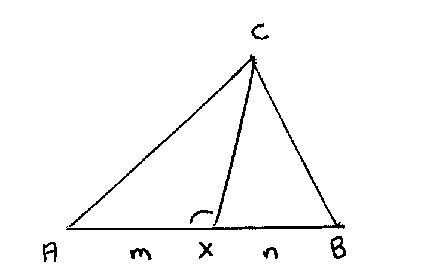
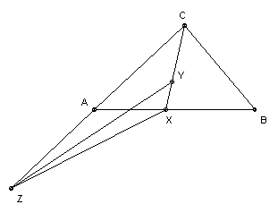

ABC is a triangle. The point X on the side AB is such that AX/XB = 4/5. The point Y on the segment CX is such that CY = 2 XY, and the point Z on the ray CA is such that ∠CXZ + ∠B = 180o. Also ∠XYZ = 45o. Show that the angles of ABC are determined and find the smallest angle.
Solution
Answer: 45o.

We show first that if AX/XB = m/n, then (m+n) cot AXC = m cot B - n cot A. Let the altitude from C be CF length h. Then AF = h cot A, FX = h cot AXC (negative), BF = h cot B. So AX = h cot A + h cot AXC, BX = h cot B - h cot AXC. Then n AX = m BX gives the result.

Let the line parallel to BC through X meet AC at T. Then AT/TC also equals m/n and ∠ATX = ∠C. So applying the result just proved to the triangle ACX we get (m+n) cot C = m cot XCA - n cot A, or 9 cot C = 4 cot XCA - 5 cot A (*).
We also apply it to the triangle XCZ to get (m+n) cot XYZ = m cot XCZ - n cot CXZ, or 3 cot 45o = cot XCZ - 2 cot CXZ = cot XCA + 2 cot B (since ∠CXZ = 180o - ∠B). So cot XCA = 3 - 2 cot B. Substituting into (*) we get 9 cot C = 12 - 8 cot B - 5 cot A, or 5 cot A + 8 cot B + 9 cot C = 12.
Now C = 180o - A - B, so using the familiar tan(A + B) = (tan A + tan B)/(1 - tan A tan B) we get cot A cot B + cot B cot C + cot C cot A = 1. Eliminating cot C with the previous equation we get 5 cot2A + 4 cot A cot B + 8 cot2B - 12 cot A - 12 cot B + 9 = 0. We find that we can rewrite this as 9(cot A - 1)2 + (cot A + 4 cot B - 3)2 = 0. So we must have cot A = 1, cot B = 1/2 and hence cot C = 1/3. So the angles are determined. A is the smallest and A = cot-11 = 45o.

© John Scholes
jscholes@kalva.demon.co.uk
10 Oct 2002
Last corrected/updated 22 Oct 2002